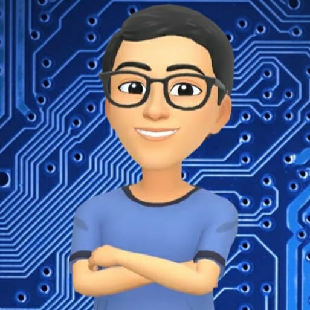

El mundo está experimentando una transformación de la era atómica a la era de los bits, donde el avance de la ciencia y la tecnología informática juega sin duda un papel crucial. Después de más de 50 años de desarrollo gradual, la aplicación de la
tecnología informática está prácticamente en todas partes, convirtiéndose en una parte indispensable e integral del trabajo, la vida
y el aprendizaje de las personas, dando lugar a una cultura informática única.
El mundo está experimentando una transformación de la era atómica a la era de los bits, donde el avance de la ciencia y la tecnología informática juega sin duda un papel crucial. Después de más de 50 años de desarrollo gradual, la aplicación de la
tecnología informática está prácticamente en todas partes, convirtiéndose en una parte indispensable e integral del trabajo, la vida
y el aprendizaje de las personas, dando lugar a una cultura informática única.
Esta nueva cultura puede definirse como el conjunto de significados asociados a la tecnología de la información que impregna intensamente a la sociedad actual, implicando poseer habilidades básicas en el uso de la informática para apoyar diversas actividades, como la búsqueda, procesamiento y presentación eficiente de la información.
Esta nueva forma cultural incluye el conocimiento tecnológico y su aplicación efectiva en diversos ámbitos de la sociedad, razón por la cual la se manifiesta en:
 La cultura informática, como una de las formas culturales más dinámicas en la actualidad, acelera el progreso de la sociedad
humana. Las ideas generadas y las condiciones materiales creadas por ella, así como la difusión de la educación en cultura
informática, son beneficiosas para el avance y desarrollo de la sociedad humana. Al mismo tiempo, la cultura informática ha traído
una nueva concepción de aprendizaje para la humanidad: frente al vasto océano de conocimiento, el conocimiento que el cerebro
humano puede adquirir es limitado, esencialmente no podemos "aprender" todo; las herramientas como las computadoras pueden
liberarnos del pesado trabajo de memoria memorístico, permitiendo que el cerebro humano se utilice más para la labor creativa.
La cultura informática, como una de las formas culturales más dinámicas en la actualidad, acelera el progreso de la sociedad
humana. Las ideas generadas y las condiciones materiales creadas por ella, así como la difusión de la educación en cultura
informática, son beneficiosas para el avance y desarrollo de la sociedad humana. Al mismo tiempo, la cultura informática ha traído
una nueva concepción de aprendizaje para la humanidad: frente al vasto océano de conocimiento, el conocimiento que el cerebro
humano puede adquirir es limitado, esencialmente no podemos "aprender" todo; las herramientas como las computadoras pueden
liberarnos del pesado trabajo de memoria memorístico, permitiendo que el cerebro humano se utilice más para la labor creativa.
La cultura informática representa una nueva cultura de la era y ha llevado las habilidades que una persona posee después de la educación cultural desde las tradicionales de leer, escribir y hacer cálculos a nuevas alturas: además de poder leer, escribir y calcular, también se debe tener la capacidad de utilizar computadoras (habilidades de información). Y esta habilidad puede lograrse a través de la difusión de la cultura informática.


 La cultura informática proviene de la tecnología informática; es precisamente el desarrollo de esta última lo que ha dado lugar y
promovido la aparición y el crecimiento de la cultura informática; y la difusión de la cultura informática, a su vez, impulsa el
progreso de la tecnología informática y la expansión de las aplicaciones informáticas.
La cultura informática proviene de la tecnología informática; es precisamente el desarrollo de esta última lo que ha dado lugar y
promovido la aparición y el crecimiento de la cultura informática; y la difusión de la cultura informática, a su vez, impulsa el
progreso de la tecnología informática y la expansión de las aplicaciones informáticas.
Cuando la humanidad entró en el siglo XXI, también dio la bienvenida a la era de la información centrada en la red. Como una parte importante de la cultura informática, la cultura de Internet ya se ha convertido en parte de la vida de las personas, afectando profundamente sus vidas y también presentando desafíos sin precedentes. La era de la información es la era de Internet, y dominar Internet hábilmente se convertirá en un medio importante para el trabajo y la vida de las personas.
Desde la aparición de la primera computadora personal en 1975, solo han pasado 26 años, y ya hay casi 250 millones de computadoras personales en funcionamiento en todo el mundo. La penetración de las PC en los hogares estadounidenses ha superado el 50%, y en China, las ventas de PC aumentan a un ritmo de aproximadamente el 20% cada año. Además, cada año se instalan millones de microcontroladores en automóviles, hornos de microondas, lavadoras, teléfonos y televisores. Ha comenzado una era de amplia difusión de la computadora, dando lugar a una cultura informática fascinante. Mirando hacia atrás en más de 20 años de historia, los logros de las PC se reflejan principalmente en los siguientes aspectos:
La primera microcomputadora en aparecer en 1975 (Altair 8800) tenía un valor de 4000 dólares estadounidenses. En 1977, el famoso Apple II de 8 bits (con 64 KB de memoria, sin monitor) tenía un precio de 1300 dólares estadounidenses. En 1981, se lanzó la primera generación de PC IBM (CPU 8088 de 4,77 MHZ, 512 KB de memoria, monitor monocromo y unidad de disquete de 5 pulgadas), con un precio de 3200 dólares estadounidenses. Para 1996, se podía comprar una PC completa (CPU Pentium de 90 MHz, 8 MB de memoria, monitor VGA a color, disco duro de 54 MB), junto con teclado, impresora y otros dispositivos externos estándar, por 2500 dólares estadounidenses. En China, una PC con la última CPU Pentium IV ahora cuesta solo unos miles de yuanes. Al igual que muchos otros productos electrodomésticos, las PC ahora son productos accesibles para la mayoría de las personas.
Las primeras microcomputadoras tenían velocidades lentas y capacidades de memoria pequeñas, y sus funciones estaban muy por debajo de las minicomputadoras y las computadoras centrales. Muchos programas grandes no podían ejecutarse en PC debido a limitaciones de memoria. El avance del hardware ha llevado la velocidad de las PC a GIPS*, y la capacidad de memoria a cientos de MB, lo que ha permitido que muchos software que antes solo podían ejecutarse en estaciones de trabajo o computadoras centrales ahora se ejecuten en PC. Tecnologías avanzadas como la memoria virtual, la gestión de bases de datos, los sistemas gráficos y las aplicaciones multimedia ahora son posibles en PC. La PC de hoy en día no es "pequeña" en absoluto. No solo ha superado en funcionalidad a las máquinas más antiguas de hace 26 años, sino que también cubre muchas tecnologías nuevas contemporáneas tanto en software como en hardware.
Las operaciones de las computadoras en sus primeras etapas eran complicadas y solo los expertos podían usarlas. Sin embargo, con el tiempo, las operaciones se han simplificado. La introducción de interfaces de usuario amigables ha permitido que las computadoras se adapten a las personas. Por ejemplo, la introducción de interfaces gráficas de usuario en la década de 1980 simplificó enormemente el uso de las computadoras. La popularización de las computadoras ha llevado a un aumento en usuarios no expertos, lo que destaca la importancia de la usabilidad. En la actualidad, las interfaces gráficas de usuario se han vuelto comunes y se han integrado en la vida cotidiana. Con el desarrollo de la tecnología multimedia, las interfaces de usuario multimedia también están emergiendo.
La proliferación de computadoras y la cultura informática han tenido un impacto profundo en la sociedad. El rápido desarrollo de la tecnología de redes ha permitido que Internet penetre en todas las áreas de la vida y el trabajo, convirtiéndose en una fuente clave de información y servicios en línea. La llegada de la era de la economía en línea ha llevado a un mayor entendimiento de la computación y su cultura, y su impacto en la sociedad se puede entender a través de características como la autopista de la información y la sociedad de la información.
Para conocer más sobre la historia de la informática, puede acceder a una línea del tiempo de la informática tocando el enlace de abajo:

Dentro del contexto de la cultura informática, es importante tomar en consideración los sistemas informáticos, pues a través de ellos es que se desarrolla esta cultura. Los sistemas informáticos son el conjunto de elementos físicos y lógicos que se encargan de recibir, guardar y procesar datos para luego entregarlos en forma de resultados hacia el usuario. Actualmente juegan papel clave para la organización humana ya que resulta ser una herramienta poderosa para el intercambio de información y la elaboración de redes informáticas que superan la barrera de las distancias.
Los sitemas informáticos están compuestos por 4 elementos principales que se presentarán en la siguiente tabla:
| Elementos | Definición | Ejemplos | Imagen |
|---|---|---|---|
| Hardware | Son partes físicas, tangibles, de un sistema informático, sus componentes eléctricos, electrónicos y electromecánicos. Los cables, así como los muebles o cajas, los periféricos de todo tipo, y cualquier otro elemento físico involucrado, componen el hardware o soporte físico. | Por ejemplo las computadoras poseen numerosos componentes que conforman su hardware, como el procesador, el motherboard, entre otros componentes que se explican con mayor profundidad en el link que se encuentra presionando la imagen de al lado. |  |
| Software | Conjunto de los componentes lógicos necesarios que hace posible la realización de tareas específicas, en contraposición a los componentes físicos que son llamados hardware. | Existen numerosos softwares para realizar diferentes tareas, como Adobe Photoshop que es un software de edición de imágenes, Microsoft Word que permite procesar textos, Facebook e Instagram que son softwares de comunicación, etc. |  |
| Sistema Operativo | Es el conjunto de programas de un sistema informático que gestiona los recursos del hardware y provee servicios a los programas de aplicación de software. Este básicamente se encarga de gestionar la entrada y salida de datos, gestiona la memoria y el sistema en general. | Algunos ejemplos son Windows desarrollado por Microsoft, iOS desarrollado por Apple para sus dispositivos móviles, macOS también desarrollado por Apple, pero para ordenadores, Android diseñado para dispositivos móviles y Linux que utiliza un código abierto. |  |
| Usuario | Es la persona que interactúa con un sistema informático, como una computadora o una aplicación móvil, para realizar tareas específicas. | Realizan diferentes tipos de actividades en un sistema informático, como navegar por Internet, crear documentos, enviar correos electrónicos, editar imágenes y videos, y jugar juegos. |  |
Hoy en día la Inteligencia Artificial juega un rol muy importante en la cultura informática ya que sirve como herramienta que ayuda a facilitar diversos tipos de trabajos y además permiten el uso de tecnología sin necesidad de tener conocimientos avanzados en esta. Para conocer más sobre las inteligencias artificiales, haga click en la imagen de abajo y podrá acceder a una presentación que detalla diversos aspectos sobre la inteligencia artificial.

| Problemas de la Cultura Informática | |||
|---|---|---|---|
| Falta de Alfabetización Informática | Problemas Éticos en el Uso de las TIC s | Inadecuada Herencia del Conocimiento | Problemas de Seguridad Informática |
| La carencia de conocimientos y habilidades básicas en informática puede limitar la capacidad de las personas para desenvolverse en una sociedad informatizada. No en todas partes del mundo se educa sobre la informática, a menudo las instituciones educativas no poseen los recursos necesarios para dar estas enseñanzas, no poseen equipos o están desfasados, provocando una educación pobre sobre esta cultura. | La falta de conciencia sobre las implicaciones éticas del uso de las tecnologías de la información y la comunicación puede llevar a situaciones problemáticas en el ámbito digital. Como ciber-ciudadanos es nuestro deber el utilizar las herramientas informáticas para el bien, encontrarles un uso adecuado que no perjudique a los demás, pero lamentablemente, existen millones de usuarios alrededor de toda la red informática que abusan de sus conocimientos informáticos y lo utilizan para causar daños a otros usuarios obteniendo beneficios de ellos. | La transmisión inadecuada de conocimientos informáticos en instituciones educativas puede obstaculizar la consolidación de la cultura informática. A menudo hay barreras que no permiten a las sociedades abrir sus puertas a la cultura informática, como las barreras económicas, o la falta de recursos para entrar en ella o en las que ciertas culturas y sociedades ven con malos ojos a toda la informática, evitando que las personas puedan aprovechar los conocimientos y demás beneficios de toda la cultura informática. | La presencia de virus informáticos, la falta de actualización de sistemas y la pérdida de datos son desafíos comunes que pueden surgir en entornos informáticos. Es común encontrar a lo largo de la red ciberdelincuentes que se hacen pasar por entidades de confianza que instan a los usuarios de realizar alguna acción como comprar un producto, o registrarse en alguna página web, pero esto solo les abre la ventana para robar la información privada de los usuarios o instalarles virus en sus ordenadores y demás dispositivos electrónicos, suponiendo un peligro notorio en la seguridad informática. Si bien se han tomado diversas medidas para evitar estos peligros, hoy día siguen representando una amenaza para la cultura informática. |
| Webmaster | Avatar | |
|---|---|---|
| Juan Becerra |  | jpbecerra26@gmail.com |
| Sergey Crastz |  |
sergeycrastz06@gmail.com |
| Arno Fascio | fascioarno7@gmail.com | |
| Freddy Simoza |  |
freddyjaviersimoza123@gmail.com |
| Yanitza Wu | yanitzawu12@gmail.com |